전자산업기사 (2011-10-09 기출문제)
1과목: 전자회로
1. 다음 회로의 파형으로 맞는 것은?
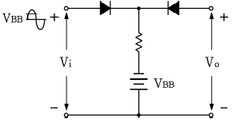
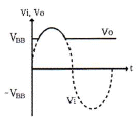
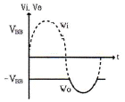
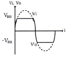
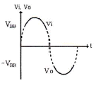
(정답률: 91%)

2. 직류 증폭기에서 온도 변화 등의 영향으로 인하여 출력이 변동되는 현상은?
- 발진
- 초퍼
- 증폭
- 드리프트
(정답률: 87%)
3. 저주파 전력증폭기의 출력측 기본파 전압이 50[V]이고, 제2 및 제3고조파 전압이 각각 4[V]와 3[V]일 때 왜율은?
- 5[%]
- 10[%]
- 15[%]
- 20[%]
(정답률: 72%)
4. 디지털 변조가 아닌 것은?
- PM
- ASK
- FSK
- QAM
(정답률: 89%)
5. 다음 중 수정발진기의 특징에 대한 설명으로 적합하지 않은 것은?
- 수정진동자의 Q가 매우 높다.
- 주파수의 안정도가 아주 좋다.
- 발진조건을 만족하는 리액턴스의 유도성이 되는 주파수 범위가 매우 넓다.
- 발진주파수를 가변하기가 어려운 단점이 있다.
(정답률: 41%)
6. 진폭 변조(AM0에서 반송파 진폭이 20[V]이다. 25[V]의 진폭을 가지는 신호파를 인가한 경우 변조도는?
- 0.65
- 0.8
- 1.0
- 1.25
(정답률: 83%)
7. 베이스접지(CB) 증폭회로에 대한 설명으로 적합하지 않은 것은?
- 입력임피던스가 낮다.
- 전류이득은 1보다 훨씬 크다.
- 입력에 대한 출력은 동상이다.
- 높은 주파수를 다루는 응용분야에 주로 사용된다.
(정답률: 75%)
8. 다음 그림의 회로는 비안정 멀티바이브레이터(Astable multivibrator)이다. 발진주파수에 대한 식으로 옳은 것은?
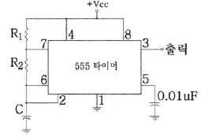
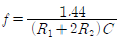
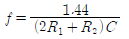
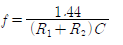
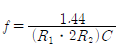
(정답률: 59%)
9. 어떤 TR이 VCE=6[V]로 동작한다. 이 TR의 최대 정격전력이 250[mW]이라면 결딜 수 있는 최대 컬렉터 전류는 약 몇 [mA]인가?
- 20[mA]
- 42[mA]
- 51[mA]
- 64[mA]
(정답률: 70%)
10. AM에서 1000[kHz]의 반송파가 35[kHz] 사인파에 의해 변조될 때 상측파대 주파수는?
- 1000[kHz]
- 1035[kHz]
- 1070[kHz]
- 1124[kHz]
(정답률: 89%)
11. 푸시풀(push-pull) 증폭기의 설명으로 옳은 것은?
- B급이나 AB급으로 동작시킨다.
- 두 입력의 위상은 동상이어야 한다.
- 공급 전압에 리플이 포함되어 있으면 부하에 나타난다.
- 트랜지스터의 비선형 특성에서 오는 일그러짐이 증가한다.
(정답률: 66%)
12. 다음은 연산증폭기회로에서 출력 전압 Vo은?
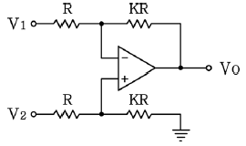
- Vo = K(V2 - V1)
- Vo = KV2 - (K + 1)V1
- Vo = (K + 1)V2 - KV1
- Vo = (K + 1)(V2 - V1)
(정답률: 83%)
13. 다음 중 연산증폭기에 관한 설명으로 옳은 것은?
- 입력단자는 반전 입력(+)과 비반전 입력(-) 두개가 있다.
- 이상적인 연산증폭기의 주파수 대역폭은 매우 좁아 주파수의 선택도가 매우 뛰어나다.
- 이상적인 연산증폭기의 출력임피던스는 무한대의 값을 갖기 때문에 버퍼회로에 이용된다.
- 연산증폭기는 선형 집적회로로 동작 전압이 낮고 신뢰도가 매우 높다.
(정답률: 72%)
14. RC 결합 증폭기에서 주파수 대역폭을 1/4로 줄이면 증폭이득은 약 얼마나 증가하는가?
- 8[dB]
- 10[dB]
- 12[dB]
- 14[dB]
(정답률: 71%)
15. 무궤환시 전압이득이 100인 증폭기에서 궤환률 0.09의 부궤환을 걸었을 때 전압이득은?
- 1
- 9
- 10
- 50
(정답률: 69%)
16. 다음 그림은 반전연산증폭회로이다. V1=3[V], V2=4[V]일 때 Vo은 몇 [V]인가?
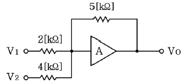
- -12.5
- -13.75
- -14.2
- -15.25
(정답률: 85%)
17. 다음과 같은 발진회로의 발진주파수는?
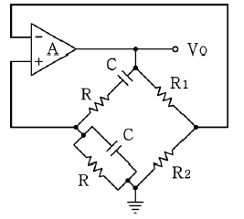
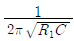
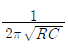
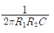
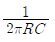
(정답률: 53%)
18. 연산증폭기 응용회로에서 궤환을 사용하지 않은 것은?
- 반전 증폭기
- 비반전 증폭기
- 영전위 검출기
- 사이트 트리거
(정답률: 59%)
19. 다음 부궤환 회로의 특징 중 옳은 것은?
- 궤환시 이득을 감소한다.
- 주파수 대역폭이 좁아진다.
- 궤환시 왜율이 증가한다.
- 궤환시 잡음이 증가한다.
(정답률: 71%)
20. 다음의 집항형 RET 회로에서 드레인 전류 I0=4[mA]일 때 드레인과 소스 전압 VDS는 몇 [V]인가?
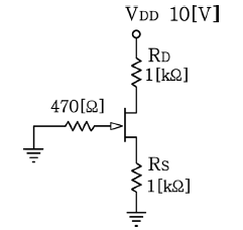
- 1[V]
- 2[V]
- 3[V]
- 4[V]
(정답률: 72%)
2과목: 전기자기학 및 회로이론
21. 도체계에서 임의의 도체를 일정 전위의 도체로 완전 포위하면 내외 공간의 전계를 완전히 차단할 수 있다. 이것을 무엇이라 하는가?
- 전자차폐
- 정전차폐
- 홀(hall) 효과
- 핀치(pinch) 효과
(정답률: 82%)
22. 엘래스턴스(elestance)란?
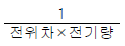
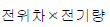
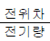
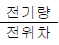
(정답률: 61%)
23. 정전용량 C0[F]인 동심구형(同心球形) 콘덴서의 내구 및 외구의 반지름을 모두 2배로 해줄 때 콘덴서의 정전용량 C는 몇 [F]인가?
- C = Co
- C= 2Co
- C= Co/2
- C= 4Co
(정답률: 73%)
24. 100[V]용 60[W]와 100[W]의 전열구가 있을 때, 이들을 직렬연결하고 양단에 200[V]를 가했을 때 전구 60[W]에 걸리는 전압[V]은?
- 75[V]
- 100[V]
- 125[V]
- 150[V]
(정답률: 52%)
25. 점전하 +Q의 무한 평면도체에 대한 영상전하는?
- Q보다 크다.
- Q보다 작다.
- Q와 같다.
- -Q와 같다.
(정답률: 82%)
26. 그림과 같이 면적 S[m2]의 평행판 도체사이에 두께 ℓ1[m], ℓ2[m], 유전율 ε1, ε2인 유전체를 넣었을 때의 정전용량은 몇 [F]인가?
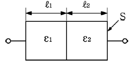
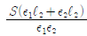
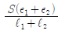
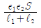
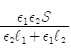
(정답률: 47%)
27. 직선전류에 의해서 그 주위에 생기는 환상의 자계방향은?
- 전류의 방향
- 전류의 반대방향
- 오른나사의 진행방향
- 오른나사의 회전방향
(정답률: 81%)
28. 두 코일이 있다. 한 코일의 전류가 매초 120[A]의 비율로 변화할 때, 다른 코일에 15[V]의 기전력이 발생하였다면 두 코일의 상호인덕턴스는?
- 0.125[H]
- 0.255[H]
- 0.515[H]
- 0.615[H]
(정답률: 74%)
29. 자기 인덕턴스를 계산하는 공식이 아닌 것은? (단, A[Wb/m]는 벡터퍼텐셜이고, J[A/m2]는 전류밀도이다.)
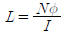
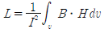
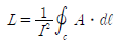
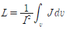
(정답률: 69%)
30. 전자파의 진행 방향은?
- 전계 E의 방향과 같다.
- 자계 H의 방향과 같다.
- E×H의 방향과 같다.
- ∇×E의 방향과 같다.
(정답률: 75%)
31. 다음 회로에서 부하 임피던스 ZL[Ω]을 얼마로 하면 최대 전력이 부하에 전달되는가?
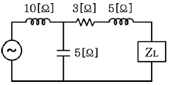
- 5+j3
- 5-j3
- 3+j5
- 3-j5
(정답률: 52%)
32. 다음 중 이상변압기(ideal transformer)를 만족하는 조건으로 옳지 않은 것은?
- 두 코일간의 결합계수가 1일 것
- 코일에 관계되는 손실이 0일 것
- 두 코일의 각 인덕턴스가 무한대일 것
- 단자 전압비는 권선수비의 역수와 같을 것
(정답률: 63%)
33. 하이브리드 h 파라미터에서 단락 임피던스와 개방 출력 어드미턴스를 갖는 상수들로 구성된 것은?
- 단락 임피던스: h11, 개방 출력 어드미턴스: h12
- 단락 임피던스: h21, 개방 출력 어드미턴스: h22
- 단락 임피던스: h11, 개방 출력 어드미턴스: h22
- 단락 임피던스: h21, 개방 출력 어드미턴스: h12
(정답률: 59%)
34. 저항 R과 유도리액턴스 XL의 직렬회로에서 서셉턴스 B를 표현한 것으로 옳은 것은?
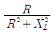
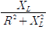
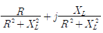
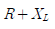
(정답률: 75%)
35. 어떤 회로에서 유효 전력이 300[W]이고, 무효 전력이 400[Var]이다. 이 회로에 100[V]의 전압원을 접속하면 회로에 흐르는 전류는 몇 [A]인가?
- 7
- 6
- 5
- 4
(정답률: 54%)
36. 4단자정수 A, B, C, D 사이에는 어떤 관계가 항상 성립하는가?
- AB+CD = 1
- AB-CD = 1
- AD+BC = 1
- AD-BC = 1
(정답률: 57%)
37. 단위 길이당 임피던스 및 어드미턴스가 각각 Z 및 Y인 전송 선로의 전파정수는?
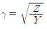
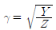
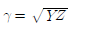
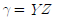
(정답률: 73%)
38. 페이저가 E=3+j4인 복소수를 정현파의 순시치로 나타내면 어떻게 되는가?
- 5sin(wt + 36.9°)
- 5sin(wt + 53.1°)
- 5√2sin(wt + 36.9°)
- 5√sin(wt + 53.1°)
(정답률: 66%)
39. sin ωt의 라플라스 변환은?
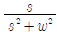
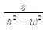
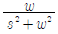
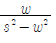
(정답률: 61%)
40. 공전 회로에 있어서 선택도 Q를 표시하는 옳은 식은? (단, RLC 직렬 공진 회로임)
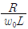
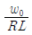
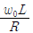
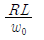
(정답률: 75%)
3과목: 전자계산기일반
41. 시프트 레지스터의 기능이 아닌 것은?
- 곱셈
- 나눗셈
- 직렬 전송
- 덧셈
(정답률: 64%)
42. 채널 제어기에 대한 설명 중 옳은 것은?
- 하나의 입출력 명령으로 한 블록의 자료만 입출력 할 수 있다.
- 하나의 입출력 명령에 의하여 여러 블록의 자료를 입출력 할 수 있다.
- 중앙처리장치와 마찬가지로 주기억장치에 있는 명령을 수행하는 기능은 있으나 주기억장치에 접근할 수 없다.
- 채널과 중앙처리장치는 동시 동작이 불가능하므로 중앙처리장치는 입출력을 위해 많은 시간이 소비된다.
(정답률: 64%)
43. C 언어에서 사용하는 데이터형이 아닌 것은?
- int
- long
- short
- character
(정답률: 79%)
44. CPU가 인스트럭션을 수행하는 순서로 옳은 것은?
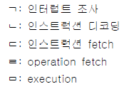
- ㄷ → ㄴ → ㄹ → ㅁ → ㄱ
- ㄷ → ㄹ → ㄴ → ㅁ → ㄱ
- ㄹ → ㄴ → ㄷ → ㅁ → ㄱ
- ㄹ → ㄷ → ㄴ → ㅁ → ㄱ
(정답률: 58%)
45. 명령 인출 사이클(fetch cycle)의 설명 중 옳지 않은 것은?
- 실행 사이클(execution cycle)에 해당한다.
- 프로그램 카운터(PC)에서 주소(address)가 MAR로 전달된다.
- 머신 사이클(machine cycle)에 속한다.k
- 명령어를 해독한다.
(정답률: 44%)
46. 일반적으로 현재 많이 사용하고 있는 C 프로그램의 장점이 아닌 것은?
- 기계어를 중심으로 작성한다.
- 고급 언어의 일종이다.
- 시스템 프로그래밍의 작성에 용이하다.
- 응용 프로그램의 개발이 쉽다.
(정답률: 76%)
47. 10진수로 표현된 (14.625)10을 2진수로 변환하면?
- 1011.011
- 1100.11
- 1011.111
- 1110.101
(정답률: 78%)
48. 4비트의 2진수를 그레이 코드로 변경하는 논리회로를 구현하기 위한 게이트로 알맞은 것은?
- AND 게이트 3개
- OR 게이트 3개
- NAND 게이트 3개
- EX-OR 게이트 3개
(정답률: 86%)
49. 다음 중 그레이(Gray) 코드를 사용하지 않는 것은?
- A/D 변환기(Analog-to-Digital converter)
- D/A 변환기(Digital-to-Analog converter)
- 카르노 맵(Karnaugh map)
- 산술논리장치(Arithmetic Logic Unit)
(정답률: 57%)
50. 정적(Static) RAM에 대한 설명으로 옳지 않은 것은?
- D(Dynamic) RAM과 비교하여 대용량의 구성이 어렵고, 가격이 비싸다.
- 메모리 리플레시(Refresh) 동작이 필요하지 않다.
- Capacitor에 전하를 축적하여 정보를 기억한다.
- DRAM과 비교하여 동작속도가 빠르다.
(정답률: 66%)
51. 단항(unary) 연산자 연산에 해당하지 않는 것은?
- COMPLEMENT
- MOVE
- SHIFT
- AND
(정답률: 76%)
52. 알고리즘에 대한 설명 중 틀린 것은?
- 알고리즘은 하나 이상의 연산을 필요로 하는 과정들의 유한집합으로 구성된다.
- 알고리즘의 각 연산은 사람이 연필과 종이를 가지고 할 수 있어야 한다.
- 알고리즘은 유한횟수의 작업을 수행한 후 끝나야 한다.
- 알고리즘이 시작되어서 끝나기까지 걸리는 시간은 상관할 바가 아니다.
(정답률: 83%)
53. 컴퓨터에서 명령문이 시행될 때 다음에 시행할 명령문의 주소는 어디에 두는가?
- Program Counter
- MAR(Memory Address Register)
- Cache
- Instruction Register
(정답률: 77%)
54. 다음의 마이크로버스에서 비동기 직렬 데이터 전송인 경우에 가장 많이 사용되는 것은?
- S-100
- CAMAC
- IEEE-488
- RS-232C
(정답률: 69%)
55. 다음 진리표를 보고 논리식을 최소화하면?
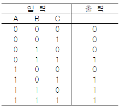
(정답률: 62%)
56. 다음 중 부동소수점 연산에서 정규화를 하는 주목적은 무엇인가?
- 연산 속도를 증가시키기 위해서
- 숫자 표시를 간단히 하기 위해서
- 수의 정밀도를 높이기 위해서
- 부호 비트를 생략하기 위해서
(정답률: 63%)
57. JK 플립플롭의 트리거 입력과 상태 전환 조건을 설명한 것 중 옳지 않은 것은?
- J=0, K=0일 때는 현재의 상태를 유지한다.
- J=0, K=1일 때는 0으로 된다.
- J=1, K=0일 때는 0으로 된다.
- J=1, K=1일 때는 반전된다.
(정답률: 77%)
58. 다음 중 화면입력 장치가 아닌 것은?
- 디지타이저
- 문자판독기
- 라이트 펜
- 터치스크린
(정답률: 70%)
59. 다음 중에서 가장 빠른 기억장치는?
- 자기 코어
- 자기 디스크
- 자기 드럼
- DRAM
(정답률: 78%)
60. 소프트웨어적인 방법으로 인터럽트 요청신호 플래그를 차례로 검사하여 인터럽트의 발생 위치를 찾는 방식은?
- 데이터체인 방식
- 폴링 방식
- 레지스터 방식
- 스트로브 방식
(정답률: 74%)
4과목: 전자계측
61. 다음 중 초단파대의 파장을 측정하는데 사용하는 것은?
- Q 미터
- P형 VTVM
- 레헤르(Lecher) 선
- 휘스톤(Wheatstone) 브리지
(정답률: 75%)
62. 오실로스코프(Oscilloscope)의 스크린(screen) 상에 그림과 같은 도형이 나타났을 때 Y1/Y2=0.5라고 하면 위상차 θ는 몇 도인가?
- 90°
- 60°
- 45°
- 30°
(정답률: 74%)
63. 다음 중 직류에서는 분극작요 때문에 역기전력이 발생하므로 측정 전원으로 반드시 교류가 쓰이는 브리지는?
- 코올라우시 브리지
- 휘스톤 브리지
- 캐리포스터 브리지
- 캘빈더블 브리지
(정답률: 55%)
64. 다음 중 지시계기의 제동 장치로 쓰이지 않는 것은?
- 와류 제동
- 공기 제동
- 액체 제동
- 스프링 제동
(정답률: 65%)
65. 오실로스코프를 사용하여 교류 전압 파형을 나타낼 때 교류 파형의 진폭은 어떤 값을 나타내는가?
- 실효치
- 평균치
- 절대치
- 피크치
(정답률: 72%)
66. 왜율을 표시한 식으로 옳지 않은 것은? (단, Ef는 기본파 전압, Eh는 고조파 전압이다.)
(정답률: 66%)
67. 다음 중 계수형 주파수계의 설명으로 옳지 않은 것은?
- 온도에 의한 영향이 크다.
- 파형, 전압에 의한 영향은 없다.
- 계수하기 전에 계수부를 0으로 복귀시킨다.
- 측정확도는 표준 주파수에 의해서 결정된다.
(정답률: 49%)
68. 기본파의 실효값이 20[V], 2차고조파는 5[V], 3차고조파는 3[V]이고, 4차고조파가 1[V]일 때 신호의 총고조파 왜율은 약 몇 [%]인가?
- 20.6[%]
- 25.6[%]
- 29.6[%]
- 32.6[%]
(정답률: 43%)
69. 최대 눈금 250[V]인 0.5급 전압계로 어떤 전압을 측정하였더니 지시가 100[V]이었다. 상대 오차는?
- 0.5[%]
- 1.25[%]
- 2.0[%]
- 2.25[%]
(정답률: 81%)
70. 다음 중 안테나의 실효저항측정법에 해당하지 않는 것은?
- 코일삽입법
- 작도법
- 치환법
- 저항삽입법
(정답률: 70%)
71. 저주파 발진기 중 주파수 안정도가 가장 좋은 것은?
- 음차 발진기
- CR 발진기
- 구형파 발진기
- beat 주파 발진기
(정답률: 47%)
72. 가동철편형 계기의 구동 토크(T0)와 전류(I)의 관계가 옳은 것은?
- 1/2에 비례한다.
- I에 비례한다.
- I2에 비례한다.
- I/√2에 비례한다.
(정답률: 67%)
73. 그림과 같은 등가회로로 표시할 수 있는 콘덴서의 유전체 역률 를 나타내는 식 중 옳은 것은?
(정답률: 69%)
74. 왜곡률을 측정하는 방법을 열거한 것 중 옳은 것은?
- 기본파와 고주파 전압의 적
- 기본파와 고주파 전압의 비
- 기본파와 고주파 전류의 적
- 기본파와 고주파 전류의 비
(정답률: 63%)
75. 다음 중 잡음지수 F는? (단, Si : 입력신호, Ni : 입력잡음, So : 출력신호, No : 출력잡음)
(정답률: 70%)
76. 다음은 측정용 발진기 구성도이다. 옳은 것은?
- 소인발진기
- 비트발진기
- 음차발진기
- CR 발진기
(정답률: 71%)
77. 캠벨 브리지는 무엇을 측정하는데 사용되는가?
- 커패시턴스
- 상호 인덕턴스
- 컨덕턴스
- 저항
(정답률: 72%)
78. 측정값을 M, 참값을 T라고 할 때 백분율 오차는?
(정답률: 74%)
79. 오실로스코프에 다음과 같은 리사주 파형이 나타날 때 수직, 수평의 주파수 비는?
- 수직:수평 = 3:2
- 수직:수평 = 2:3
- 수직:수평 = 2:5
- 수직:수평 = 5:2
(정답률: 52%)
80. 다음 중 윈 브리지(Wien Bridge)로 측정할 수 있는 것은?
- 역률
- 정전용량
- 접지저항
- 코일의 자기인덕턴스
(정답률: 54%)
이유는 주어진 파형이 사인파(Sine wave)로, 전압이 시간에 따라 주기적으로 변화하는 파형이기 때문이다. 보기 중에서 사인파에 해당하는 것은 "" 이다. 다른 보기들은 사각파(Square wave), 삼각파(Triangle wave), 펄스파(Pulse wave) 등 다른 파형들이다.